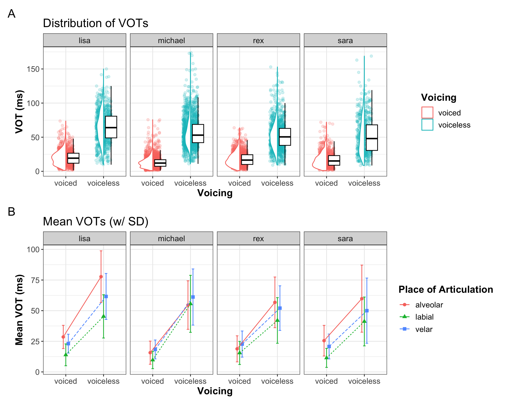

Kopieren Sie diesen Code und führen Sie ihn aus
df_vot <-
read_csv(here::here("daten", "vot_rmld_2023.csv")) Konsolidierung der neuen Kenntnisse
Daniela Palleschi
Humboldt-Universität zu Berlin
Mi. den 07.02.2024
Mi. den 07.02.2024
Der Zweck dieses Berichts ist es, das, was wir in den letzten Wochen gelernt haben, mit dem zu konsolidieren, was wir zuvor gelernt haben. Sie werden einen Datensatz aus einer veröffentlichten Arbeit laden, die sich mit der Untersuchung von Stimmbruchzeiten befasst (Sonderegger et al., 2017; Sonderegger, 2023) und die auf Moodle verfügbar ist. Wenn Sie nicht in diesem Kurs auf Moodle eingeschrieben sind, ist der Datensatz auch frei auf dem Open Science Framework unter https://osf.io/cmh3p verfügbar.
Sie können Ihr eigenes Quarto-Skript von Grund auf erstellen oder ein leeres Skript verwenden, das ich mit den Fragen und den entsprechenden Überschriften erstellt habe. Sie können dieses Skript auf Moodle oder online hier finden.
Dieser Bericht wird Ihnen als unvollständiges Quarto-Skript zur Verfügung gestellt. Ihre Aufgabe ist es, die Anweisungen zu befolgen, um das Skript zu vervollständigen. Sie finden das Skript auf Moodle, oder hier.
Bevor Sie fortfahren, überprüfen Sie, ob Sie das Skript als PDF rendern können. Es sollte laufen, auch wenn unten unvollständige Codeabschnitte stehen, da die YAML eval: false enthält.
Ändern Sie die YAML so, dass:
eval: trueAutor: "IHR NAME"Nun können Sie das Dokument erst rendern, wenn alle Code-Bausteine darunter fertiggestellt sind, weil darunter unvollständige Code-Bausteine sind und Sie eval: true gesetzt haben.
Laden Sie die Pakete tidyverse, gghalves, patchwork, und here ein.
Nachfolgend ein Codeabschnitt, der einen Datensatz aus Sonderegger et al. (2017) lädt und in Sonderegger (2023) besprochen wird. Wichtig: Sie müssen die Daten bereits heruntergeladen haben, entweder von Moodle oder vom Open Science Framework, und sie in Ihrem ‘daten’-Ordner gespeichert haben.
Der Datensatz enthält Stimmeinsatzzeiten in Millisekunden (VOTs; vot) für wortanfängliche Stoppkonsonanten (phone: p/t/k/b/d/g) in der Rede von englischen Muttersprachlern, die an der Reality-TV-Show Big Brother UK (2008, Staffel 9) teilnahmen. Wichtig ist, dass “[der Zeitpunkt des Stimmeinsatzes] im Englischen der primäre akustische Hinweis darauf ist, ob ein Stop phonologisch [stimmhaft] (b/d/g) oder [stimmlos] (b/d/g) ist” (Sonderegger, 2023, S. 98). Wir werden die Unterschiede in der VOT als Funktion der Stimmhaftigkeit und des Artikulationsortes (place: alveolar/labial/velar) in einer Untergruppe von Teilnehmern untersuchen.
Machen Sie sich mit dem Datensatz vertraut, wie Sie möchten. Sie müssen Ihre Arbeit für diese Aufgabe nicht zeigen, aber wenn Sie es tun, bedenken Sie bitte, dass, wenn Sie Code im Skript verwenden, der die Daten ausgibt (z.B. einfach df_vot), er alle Zeilen (n = 25154) erzeugt, wenn Sie das Dokument rendern, was viele Seiten zu Ihrem gerenderten Dokument hinzufügt. Versuchen Sie deshalb, mit head() nur die ersten 6 Zeilen auszudrucken (zuerst in Chatper 4 besprochen), oder öffnen Sie einfach den Datensatzbetrachter durch Doppelklick auf seinen Namen im Fenster ‘Umgebung’ (‘Environment’).
In diesem Abschnitt werden Sie Code in Base R und/oder Tidyverse interpretieren und schreiben.
Filtern Sie mit base R die Daten so, dass nur die Sprecher rex, michael, sara und lisa enthalten sind. Tipp: Verwenden Sie [,], wobei Zeilen links und Spalten rechts definiert sind. Wir wollen alle Spalten, also müssen Sie nichts rechts vom Komma einfügen.
Beschreiben Sie in Worten, was der folgende R-Basiscode bewirkt:
Schreiben Sie nun den gleichen Code in tidyverse und drucken Sie das Ergebnis aus.
Erstellen Sie mit base R eine Zusammenfassung mit dem Namen sum_vot, die den Mittelwert und die Standardabweichung der Stimmausgangszeiten sowie die Anzahl der Beobachtungen (mit length()) des gesamten Datensatzes enthält.
Machen Sie nun dasselbe mit tidyverse, aber produzieren Sie diese Werte nach Sprecher, Telefon, Ort und Stimmlage. Nennen Sie es sum_speaker.
Für diese Aufgaben werden Sie zwei Diagramme erstellen, indem Sie Funktionen und Argumente verwenden, die in der Sitzung Datenvisualisierung 4 behandelt wurden.
Erstellen Sie einen mehrteiligen Plot pro Sprecher (x-Achse) und Sprechzeit (y-Achse), der einen Scatter Plot, Boxplot und ein Dodged Histogram enthält, wobei die Facetten pro Teilnehmer in einer einzigen Zeile angeordnet sind (Hinweis: facet_wrap() hat ein Argument nrow =, mit dem die Anzahl der Zeilen definiert werden kann). Siehe Abbildung in Abschnitt 13.1.4 aus dem Web-Book zur Inspiration. Nennen Sie diese Darstellung fig_vot.
Erzeugen Sie ein Fehlerdiagramm der Zusammenfassung nach Sprechern, mit Intonation auf der x-Achse, Farbe, Form und Gruppe nach Ort der Artikulation und einer Facette pro Teilnehmer, angeordnet in einer einzigen Zeile (Hinweis: facet_wrap() hat ein Argument nrow =, das die Anzahl der Zeilen festlegen kann). Fügen Sie geom_line() ein, mit der lokalen Ästhetik linetype an Stelle. Stellen Sie sicher, dass Sie position_dodge() verwenden, um sicherzustellen, dass sich die Fehlerbalken nicht überlappen. Sobald Sie die Darstellung erstellt haben, fügen Sie Beschriftungen und Themenanpassungen hinzu, die so gut wie möglich zu Abbildung 10.9 passen. Nennen Sie diese Darstellung fig_vot_error.
Drucken Sie Ihre Diagramme übereinander mit dem Paket patchwork. Fügen Sie die Beschriftungen A und B ein (wir haben gesehen, wie man das zweimal macht: in Kapitel 10 und Kapitel 13). Sie sollten etwa so aussehen wie Abbildung 14.1 A und B.

Interpretieren Sie Ihre Diagramme. Betrachten Sie die Unterschiede zwischen den Sprechern, die Intonation und den Ort der Artikulation (und ob einer dieser Unterschiede in Abhängigkeit von einer anderen Variable variiert, z. B. ob die Unterschiede bei Intonation und Ort der Artikulation für alle Sprecher gleich sind).
Reflektieren Sie über Ihre Reise durch diesen Kurs. Was haben Sie besonders interessant gefunden? Was war schwierig? Womit tun Sie sich noch schwer? Könnten Sie sich vorstellen, das Gelernte in Zukunft bei Ihrer Arbeit anzuwenden? Wie könnte der Kurs in Zukunft verbessert werden?